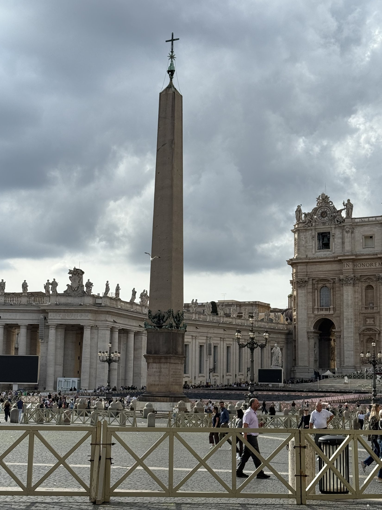

A 13th-century castle in Umbria, the footpaths of Saint Francis, and a green volunteer vest at the Holy Door — one pilgrim's Holy Year, on foot and by train.
Nine hours from Atlanta to Rome — Delta premium economy on an A350 is the way to go. Straight off the plane and onto the rails: FCO to Termini, then the regional to Perugia by way of the Umbrian hills. The Italian trains are faster than flying, clean, and you meet people — like the Spanish students on holiday from Barcelona who quickly taught me that my Chilean Spanish is not even close to real Spanish Spanish.
Home base: a real 13th-century castle outside town, Castello di Monterone. The owner distills his own gin from juniper berries he grows in Gubbio — Winston Churchill quality — and the restaurant has only a few well-appointed tables and wonderful staff. This is stepping back in time.
The castle sits on the very path Saint Francis walked in the 12th century, which let me finish the last stretches of the Via di Francesco I didn't get to last year. Last year I stayed in the city center; this year the countryside won.
Forty minutes on foot from the castle, past the old cemetery and through ancient Etruscan walls, to the heart of Perugia — the Etruscans were here before the Romans ever showed up. The Minimetro drops you from the old fortress heights to the rest of the city for one euro, with a bird's-eye view on the way down. Farmers market every Saturday: must visit.
Perugia is a college town — universities, three big hospitals, a huge student population — and Halloween here is really special: kids in costume going store to store, a non-stop merry-go-round, and chocolate everywhere. Don't miss the Etruscan well, the wall gates, and the underground streets beneath the fortress.
Ten minutes from Perugia by train — three hours on foot, my way. Started in Santa Maria degli Angeli (the city Los Angeles is named for) and hiked the sidewalk trail up the hill. Stopped to watch a farmer harvesting green olives; she showed me how it's done. Some pilgrims from Molise more or less adopted me — we sang songs on the steps at San Damiano and watched rainbows over Mount Subasio.
At the Basilica of Saint Francis I asked the priests to say a prayer for the fraternity back in North Carolina — two euros later it was done; even with a vow of poverty, these Franciscans have a knack for turning a buck. The English confessionals were all full, so I made my first confession ever in Spanish. By nightfall, mass at the Basilica of Saint Clare, built over 11th-century remains you can see through the floor.
Hiked up to Rocca Maggiore — closed last year for earthquake repairs — where the Assisi militia once watched for those pesky Perugia invaders. Now a local Labrador wanders the grounds and keeps intruders at bay. Assisi after dark, when the tourists leave, is the best time: street performers, evening markets, and you can almost hear Francis and his friends waking up the neighbors.
Train from Perugia to Termini, then a five-minute walk west into Monti — staying on the right side of the tracks at The Fifteen Keys, where the cook took me aside and showed me how to make some of the Italian specialties. Previously I'd always breeze through Rome on the way to Assisi; this time I realized what I'd been missing. It's a big modern city built on thousands of years of history. Trastevere alone is worth a week.
Get the Roma Pass on your phone — the Metro is everywhere and everyone is on it. There's even a brand-new Metro C stop at the Colosseum. Trevi, the Pantheon, the Tiber at dusk, and a da Vinci exhibition for good measure.
You can't miss the Colosseum — literally. And don't skip the Palatine Hill, the heart of ancient Rome: well worth the hike up to see where the rich and famous used to hang out, with the Forum spread out below. Sunbeams through two-thousand-year-old arches all morning long.
Scheduled to volunteer at the Vatican for four days; showed up for three. The job: escort pilgrims queued along Via della Conciliazione through the Holy Door at St Peter's, and make sure nobody jumps the queue or talks annoyingly on their cell phone. Sort of like being a bouncer at a very well-behaved bar.
The perks are real: free access to St Peter's and the Vatican Museums, a dedicated security line, and a green vest that lets you wander the back areas where people actually work, live, and park (I love those little pink Fiat 500s). Don't miss the changing of the Swiss Guard at the side entrance. Secret tip: the McDonald's by the Vatican is the most popular spot with the locals — open early, before anything else.
Off to the seven pilgrim churches of Rome, whose Jubilee doors open only during a Holy Year. The hotel was right down the street from the Basilica of Santa Maria Maggiore — where Pope Francis is buried — close enough to see the back of the basilica from my balcony. Gold, marble, and two thousand years of prayers.
After last year's rail-strike fiasco, I hired a car to the airport — 100 euros versus 12, but I wasn't going to be stranded at Terminal 2 again. Air France this time, a Boeing 777 through Charles de Gaulle, which lived up to its confusing reputation: wrong train stop, nearly missed the flight, then a bus ride to a plane parked twenty minutes away — almost like they wanted the Americans as far away as possible. Don't blame them at all.
Eight hours later, back at RDU, where customs is quick and civilized. "Did you bring us chocolate?" Yes. Found the car at Econo Park 3 and remembered that driving is no longer a competitive sport.